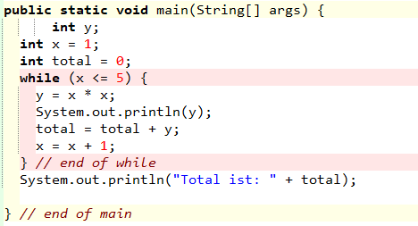

Die Aufgabe der heutigen Stunde ist mit Stift und Papier! Dazu schauen wir uns mal die Aufgabe genauer an und versuchen durch reine Mathematik die Ausgaben des Programmes zu ermitteln.
Ermittle mit Papier und Bleistift was das folgende Programm ausgibt, indem du die Belegung der Variablen für alle Durchläufe angibst. Ergänze dazu den folgenden Lösungsansatz.

Total ist 5
Total ist 14
Total ist 30
Total ist 55